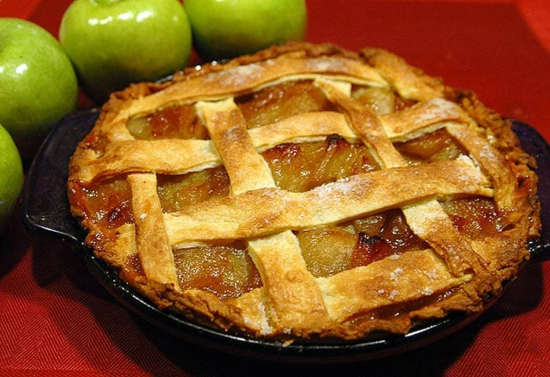

Postres
Recetario de postres

Brownies
Ingredientes
- 60 g de cacao en polvo.
- 113 g de mantequilla sin sal.
- 2 huevos.
- 125 g de azúcar estandar.
- 30 g de harina de trigo (se puede sustituir por harina de:
almendra, coco, avena, etc.).
- E ml de esencia de vainilla.
- Pizca de sal.
- Toppings al gusto
Utencilios y moldes
- Bowl grande y uno pequeño.
- Batidora o batidor globo.
- Molde para hornear.
- Papel encerado.
Procedimiento
- Precalentar el horno a 165°C.
- Cubrir con el papel encerado el
molde para hornear.
- Derretir la mantequilla junto con
el cacao en polvo a fuego lento.
Hasta conseguir una mezcla homogénea.
- Hechar los huevos en el bowl grande de uno a
uno, junto con la vainilla, comenar a
incorporar con la batidora o batidor globo.
- Mezclar la harina con el azúcar, sal y toppings.
- Incorporar a la mezcla de cacao y remover
con suavidad, hasta obtener una masa homogenea sin grumos.
- LLenar el molde con la mezcla.
- Hornear durante 30 a 40 min.
- Esperar a que enfrie para servir.
{{LikeValue}}
{{DislikeValue}}

Pay de manzana
Ingredientes
- 500gr de masa para pay preparada.
- 7 tazas de manzanas peladas y cortadas
en rebanadas delgadas
- 1 taza de Splenda® Original Granulado.
- 3 cucharadas de fécula de maíz.
- ¾ cucharadita de canela.
- ¼ cucharadita de nuez moscada.
- ⅛ cucharadita de sal.
Procedimiento
- Una vez que tengas listos todos los ingredientes
para el pay de manzana, precalienta
el horno a 425 Fº o 218 Cº.
- Después coloca una capa de masa
para pay dentro del molde.
- Posteriormente introduce las manzanas dentro de un tazón
grande y reserva. Mezcla el Splenda® Original Granulado
con la fécula de maíz, la canela, la nuez moscada y la sal
en un recipiente pequeño.
- Espolvorea la mezcla sobre las manzanas y mezcla.
- Mezclar la harina con el azúcar, sal y toppings.
- Coloca la mezcla de manzanas sobre la masa para pay.
Después procede a poner una segunda capa de esta misma
mezcla sobre las manzanas.
Sella las orillas y corta el excedente.
- Haz pequeñas hendiduras en la parte de arriba.
- Finalmente hornea de 40-50 min hasta que la masa de arriba
esté doradita. Puedes servirlo caliente o frío según él gusto.
- TIP: Puedes agregar pasitas a la mezcla de manzanas para
agregarle un toque extra.
{{LikeValue}}
{{DislikeValue}}
Gelatina de mosaico individual.
Ingredientes
- 4 tazas de leche de vaca, muy caliente.
- 1/4 tazas de gelatina, de mora azul.
- 1/4 tazas de gelatina de limón.
- 1/4 tazas de gelatina de mango.
- 1/4 tazas de gelatina de frutos rojos.
- 4 tazas de agua, muy caliente.
- 1 taza de gelatina de piña.
Procedimiento
- Divide en 4 recipientes la leche caliente y agrega
en cada uno la gelatina de mora azul, la de limon,
la de frutos rojos respectivamente. Vacía en los moldes
para refrigerar y enfriar por 1 hora hasta cuajar.
- Desmolda las gelatinas y corta en cubos uniformes.
Reserva.
- Mezcla el agua caliente con la gelatina de piña;
retira del fuego y espera a que se entibie a
temperatura ambiente.
- Acomoda los cubos de gelatinas de sabores en un molde,
agrega la gelatina de agua líquida en cada molde y
refrigera por una hora. Desmola, sirve y disfruta.
{{LikeValue}}
{{DislikeValue}}